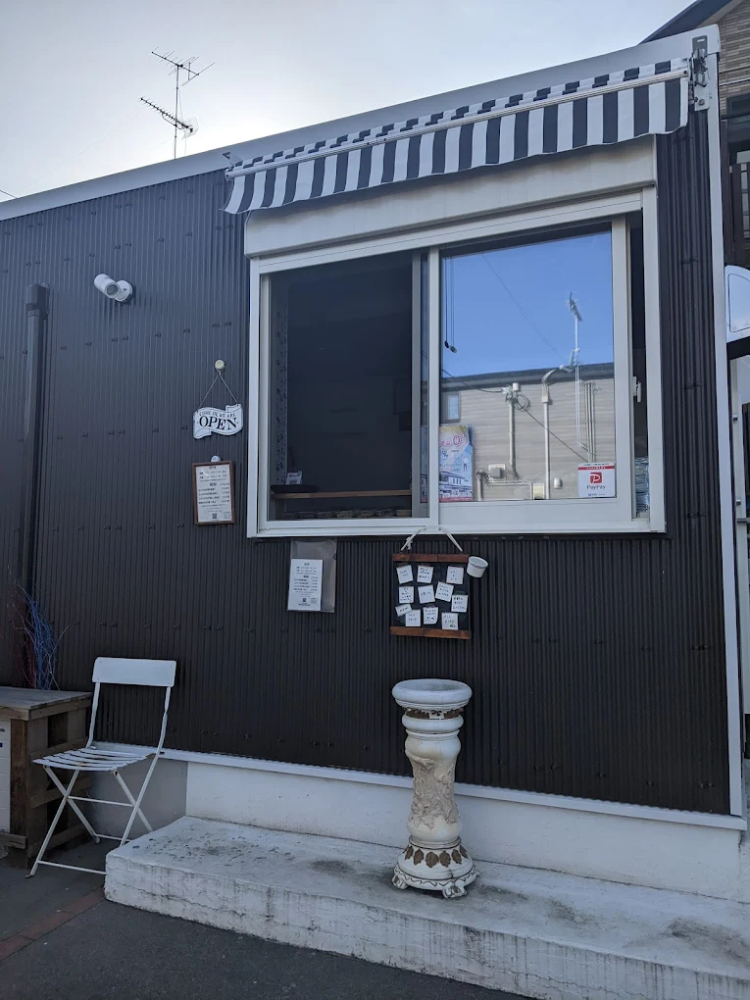

About
ののちゃんのやきとり屋とは
埼玉県熊谷市に店を構える、テイクアウト専門のやきとり屋です。 お客様からご注文をいただいてから、一本一本を丁寧に焼き上げることにこだわっています。 できたてのやきとりを、ぜひご自宅でお楽しみください。
日本三大やきとりの街・東松山
埼玉県東松山市は「日本三大やきとりの街」の一つに数えられています。 その代表格が「豚のかしら」。ピリ辛のみそダレで食べる独特のスタイルが特徴で、 地元の人々に長く愛されてきた味です。ののちゃんのやきとり屋では、 この東松山スタイルを大切にお届けしています。
Access
アクセス
住所
〒369-0108
埼玉県熊谷市船木台３丁目１２−４
電話番号
営業時間
| 金曜日 | 17:00 〜 19:00 |
| 土曜日 | 16:00 〜 19:00 |
定休日
日曜日 〜 木曜日